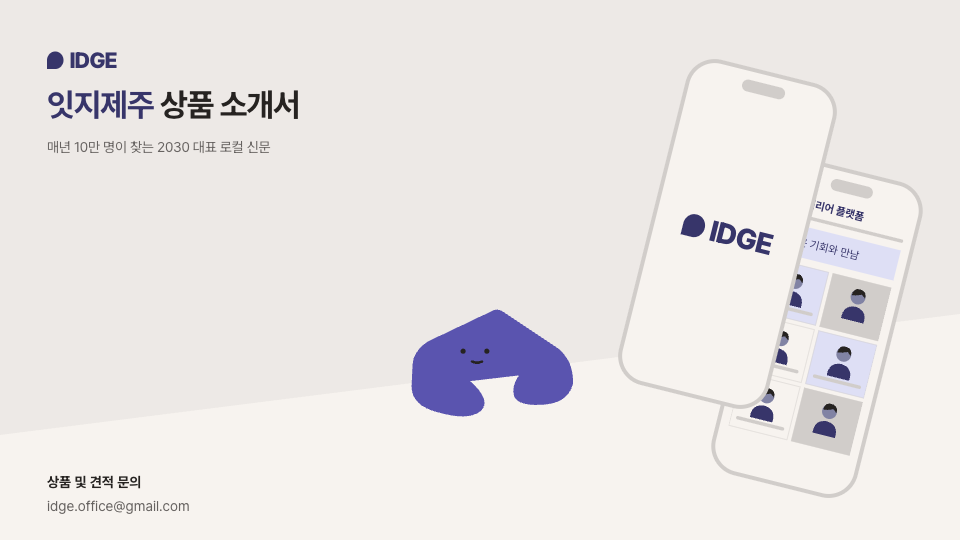
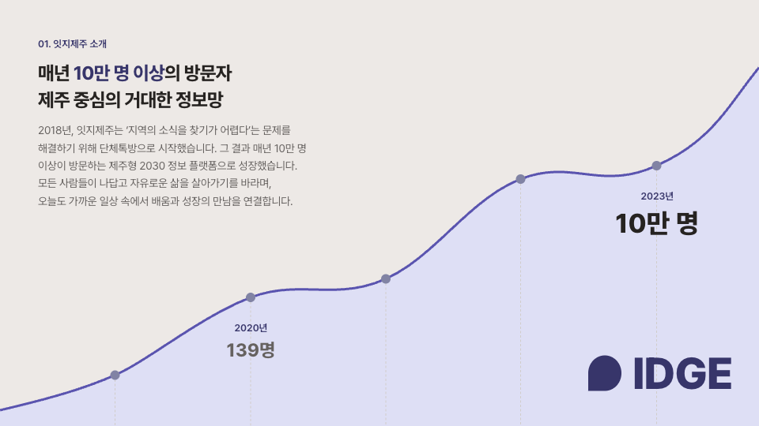
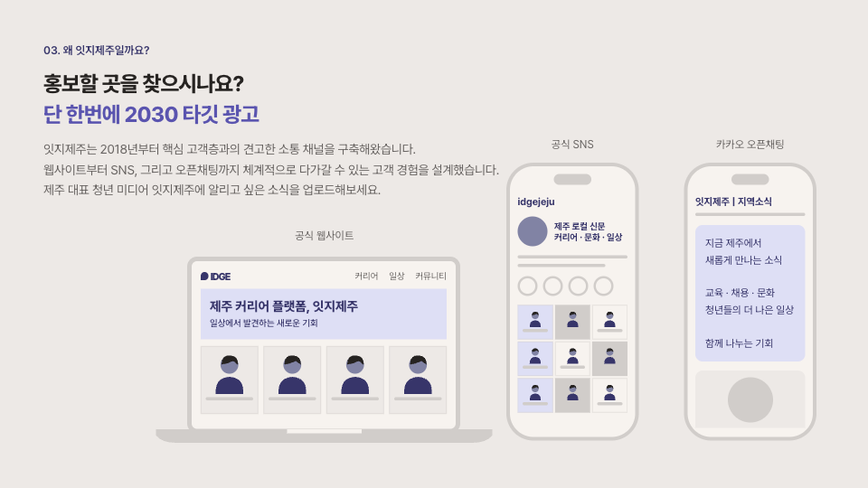
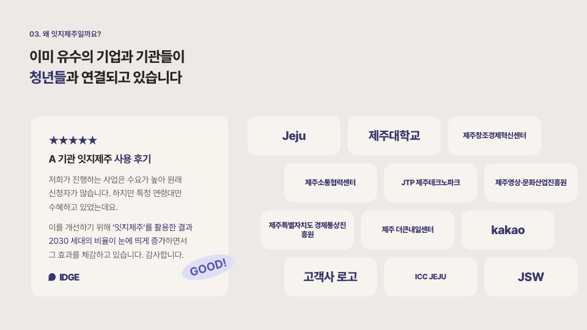
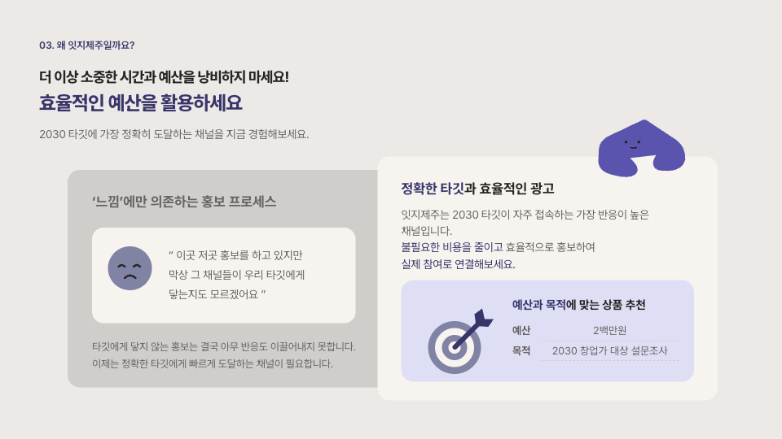
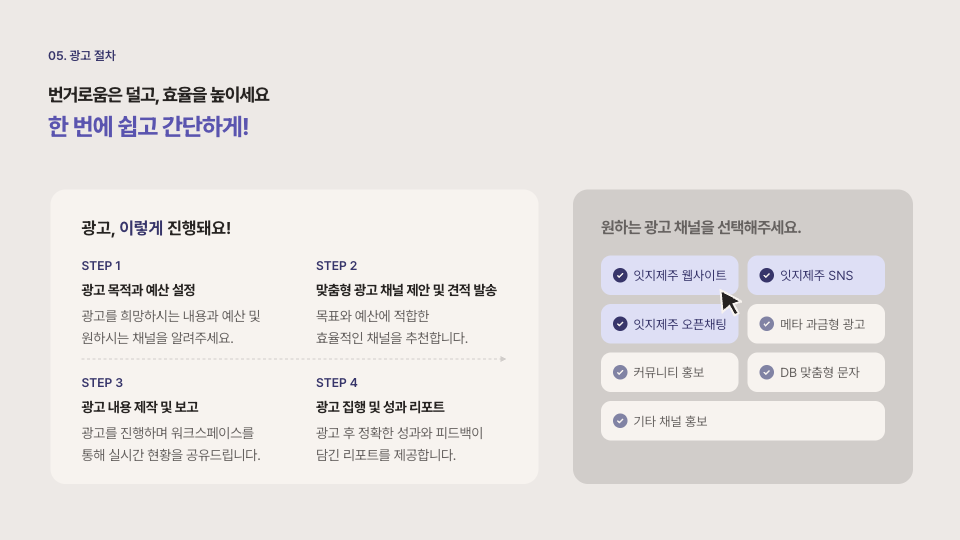

잇지제주 상품 소개서
좌측 표지 문구, 중앙 하단 마스코트와 우측 기울어진 휴대폰 2대 · 좌측 표지 문구, 중앙 하단 마스코트와 우측 기울어진 휴대폰 2대

매년 10만 명 이상의 방문자
좌상단 설명과 화면 하단·오른쪽을 채운 상승 면적 곡선 · 좌상단 설명과 화면 하단·오른쪽을 채운 상승 면적 곡선

단 한번에 2030 타깃 광고
좌상단 메시지와 하단 노트북, 우측 SNS·오픈채팅 스마트폰 · 좌상단 메시지와 하단 노트북, 우측 SNS·오픈채팅 스마트폰

기업과 기관이 청년들과 연결됩니다
왼쪽 후기 카드와 오른쪽 4행 엇갈린 로고 타일 · 왼쪽 후기 카드와 오른쪽 4행 엇갈린 로고 타일

효율적인 예산을 활용하세요
회색 문제 카드 뒤에 흰색 해결 카드가 겹치고 우상단 마스코트 · 회색 문제 카드 뒤에 흰색 해결 카드가 겹치고 우상단 마스코트

한 번에 쉽고 간단하게
왼쪽 4단계 2×2 프로세스와 오른쪽 7개 채널 선택 패널 · 왼쪽 4단계 2×2 프로세스와 오른쪽 7개 채널 선택 패널